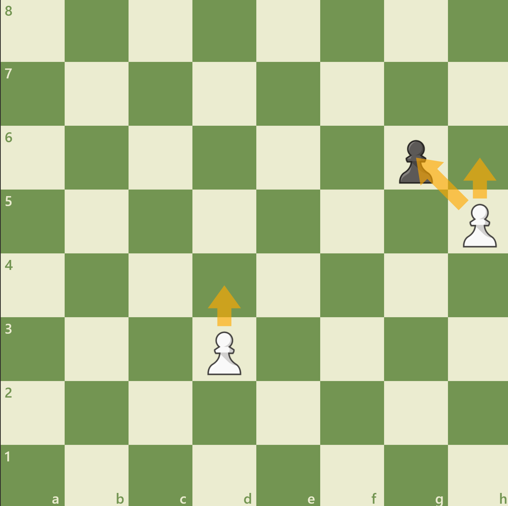
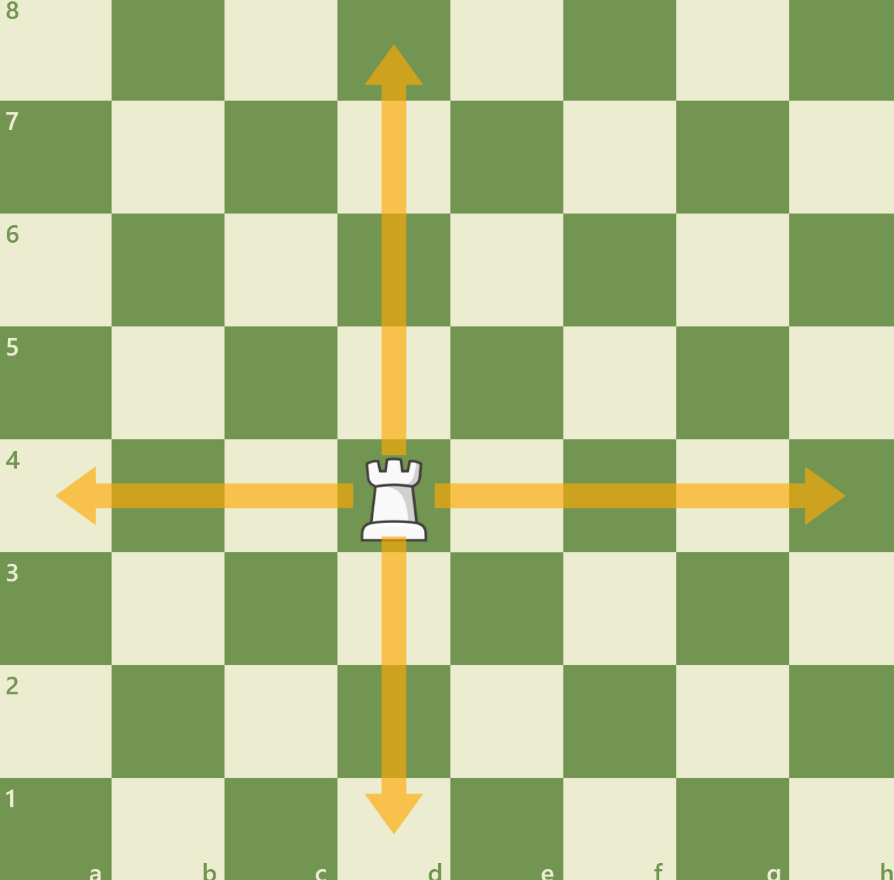
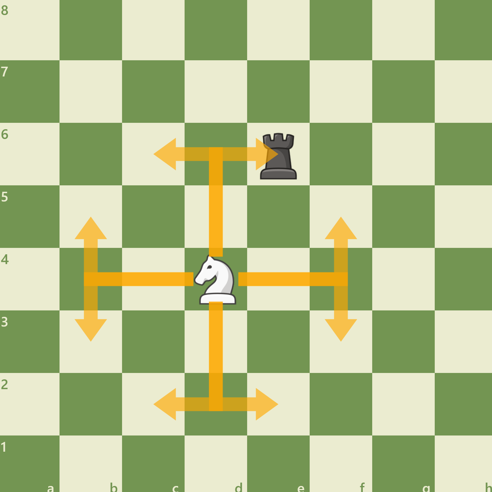
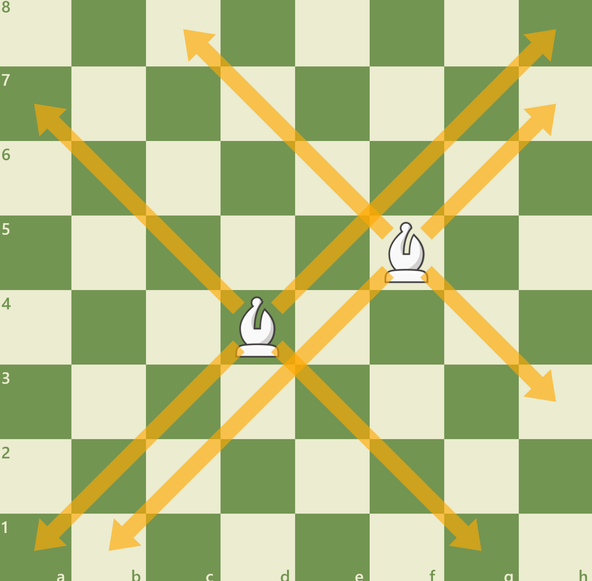
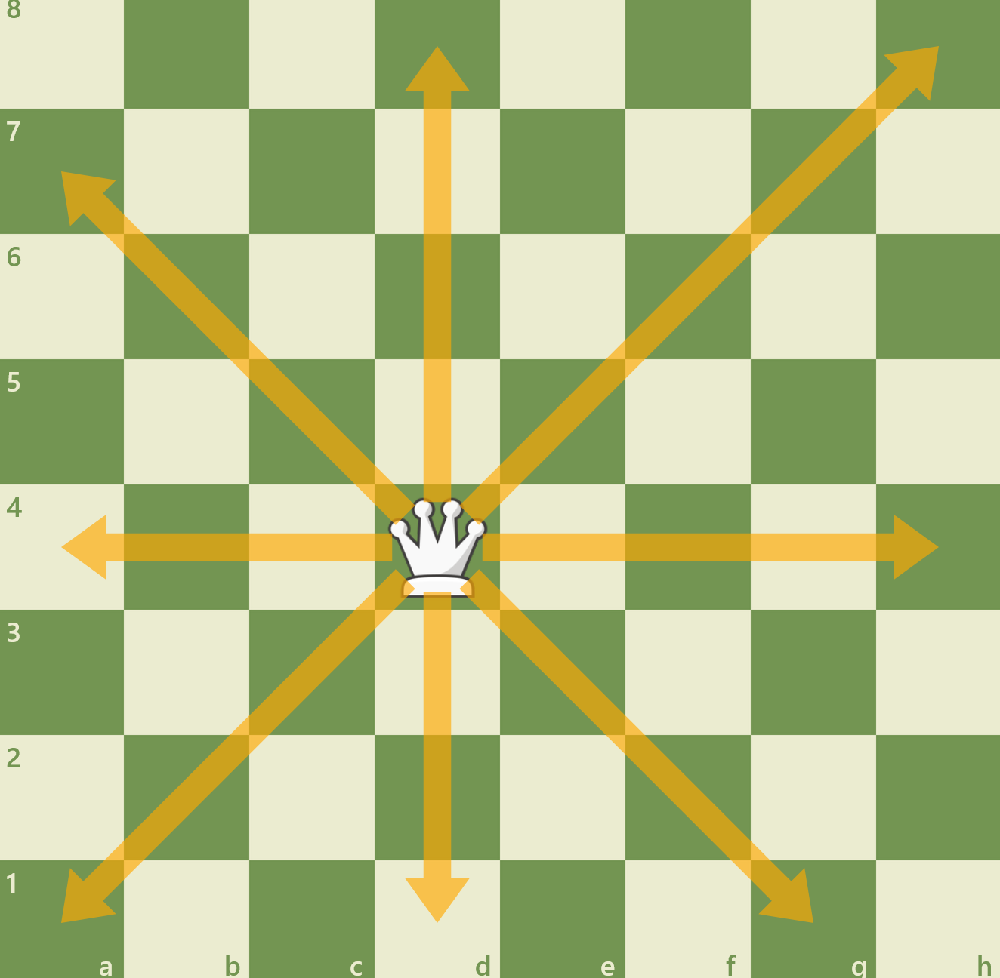
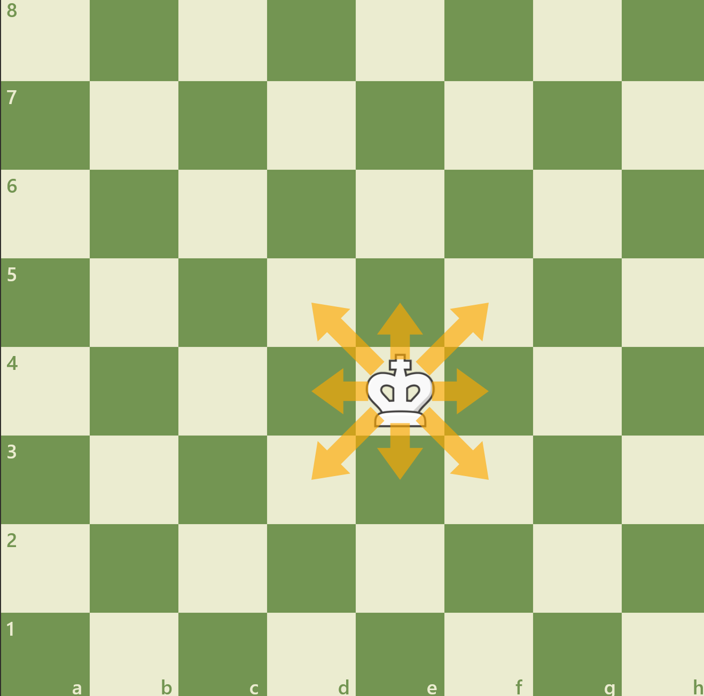

Um den Snackautomaten zu verwenden drücken Sie A auf der Tastatur
Dieser kann sich immer nur ein Feld nach vorne gehen. Einen Ausnahme ist wenn er auf der Grundlinie Steht, dannn kann er 2 felder voraus gehen. Der Bauer kann eine gegnerische Figur die diagonal vor sich steht schlagen.
Wenn der Bauer die letzte Reihe auf der anderen seite des Bretts erreicht dann wird dieser in eine Figur der Wahl des Spielers umgewandelt. (Dame, Turm, Springer, Läufer)
Dieser kann sich nur gerade bewegen. Alos entqweder den Reichen oder den Spalten entland.
Der Spirnger (auch Pferd) bewegt sich immer als "L" ==> bdeutet dieser kann sich 2 felder nach vorne, rechts, unten oder links bewegen, und dannn zusätzlich noch ein feld daneben um das "L" fertigzustellen. zusätzlich gilt dass der Springer wie der Name sagt über alle Figuren "springen Kann."
Der Läufer bewegt sich immer auf den Diagonalen. Jeder Spieler hat einen "schwarzen" und einen "weißen" Läufer. DIese heißen s da diese sich immer auf jeweils denn schwarzen oder weißen feldern bewegen
Die Dame bewegt sich wie beides der Läufer und der turm. bedeutet sie kann sich auf den Diagonalen und auf den Linien Bewegen
Der könig kann sich immer nur ein Feld in jede Richtung Bewegen. Diese FIgur muss man auch "mattsetzten" um das Spiel zu gewinnen.
Press B for Background change